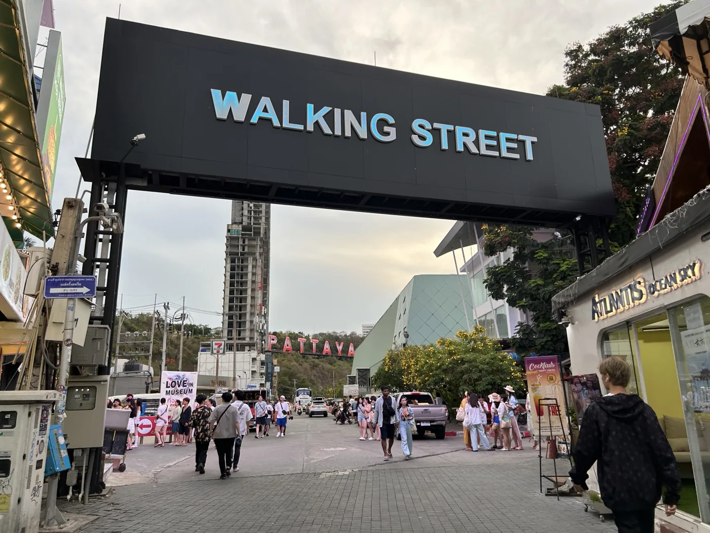
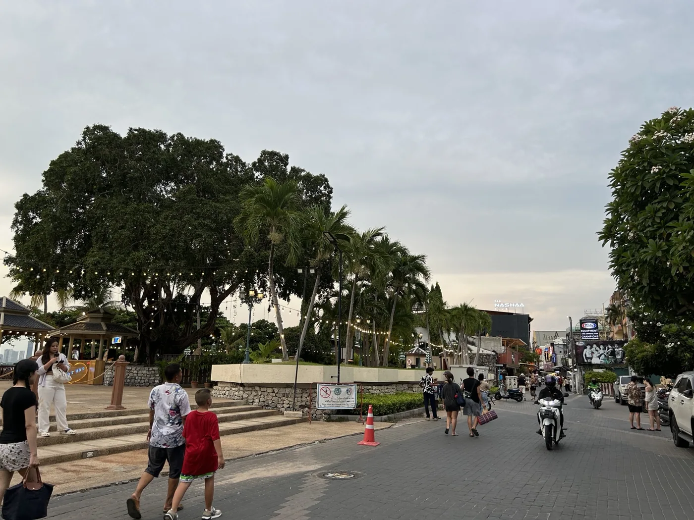

THE SANCTUARY OF TRUTH
建築の写真は満足。
ガイドは、少し長め。
サンクチュアリー・オブ・トゥルース
ホテルからはタクシーで移動。ガイド開始まで時間があったので、近くのローカルなレストランでトムヤムクンなどを食べた。タイらしい料理がとても美味しく、店の雰囲気もよかった。
見学では、スタッフが録音された日本語音声を流しながら、柱や彫刻を順番に解説してくれた。人生や道徳の物語を、建築のあちこちに刻んでいるような印象。
ただ、個人的には、いい話をたくさん集めるだけでは少し響きにくい部分も。柱を巡って録音を聞く形式はやや長く感じ、ガイドへの評価は控えめ。それでも、写真に残したくなる場所がいくつもあり、その点では来てよかった。
服装を整えて、ヘルメットを着用。服装を覆う布の貸し出しがあり、預けたデポジットは返却時に戻ってきた。館内では撮影中もヘルメットを着け、スタッフの案内に従って見学を。
BACK TO BANGKOK, THEN HOME
荷物を受け取って、
帰りのバスへ。
ホテルに預けていた荷物を受け取り、タクシーでJomtienのバス停へ。そこからバスでバンコクに戻った。
帰りの飛行機は香港経由。成田空港に到着して、帰宅。海遊びも、カフェも、夜景も楽しんだパタヤ旅行だった。
ホテル → タクシー → Jomtien Bus Station
→ バスでバンコクへ → 香港経由 → 成田


01 / 02
旅の途中に残した、パタヤの街の景色。